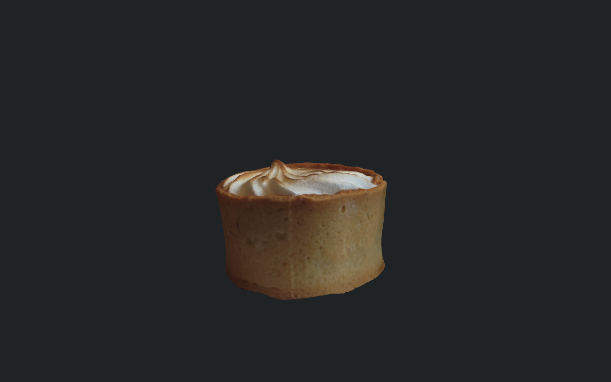

<!doctype html><meta charset="utf-8"><title>Lemon meringue tart — upstream vs factor 1.5, 2 px</title><style>*{box-sizing:border-box}body{margin:0;width:1280px;background:#202326;color:#f0f0f0;font-family:Arial,sans-serif}header{padding:16px 20px;height:88px}h1{font-size:24px;margin:0 0 8px}p{margin:0;font-size:17px}main{display:grid;grid-template-columns:640px 640px}section{margin:0}h2{height:38px;margin:0;padding:9px 12px;font-size:18px;background:#30353a}h3{height:36px;margin:0;padding:9px 12px;font-size:16px;background:#30353a}.whole{display:block;width:640px;height:400px}.crop{position:relative;width:640px;height:480px;overflow:hidden}.crop img{position:absolute;width:5120px;height:3200px;max-width:none;image-rendering:pixelated}footer{height:40px;padding:12px;font-size:14px}a{color:#b6d9ff}</style><header><h1>Lemon meringue tart — upstream vs factor 1.5, 2 px</h1><p>Same requested screen-space error, camera and source. Compare detail and silhouette.</p></header><main><section><h2>Upstream v4-fixes</h2><a href="../screenshots/RWT471/upstream-v0-t2-textured.png"></a><h3>Identical 160 × 120 px crop, magnified 4×</h3><div class="crop"></div></section><section><h2>Texture changes: factor 1.5</h2><a href="../screenshots/RWT471/factor1_5-v0-t2-textured.png"></a><h3>Identical 160 × 120 px crop, magnified 4×</h3><div class="crop"></div></section></main><footer>Top: complete fixed-view capture at 50% scale. Bottom: original pixels at 4×; no new render or sharpening. Left = baseline; right = experiment.</footer>